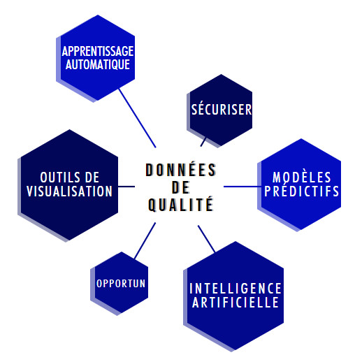
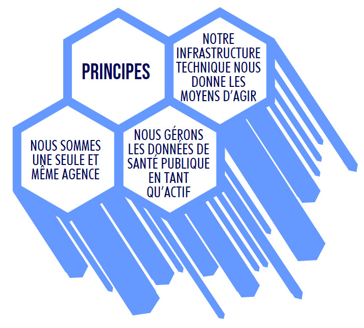
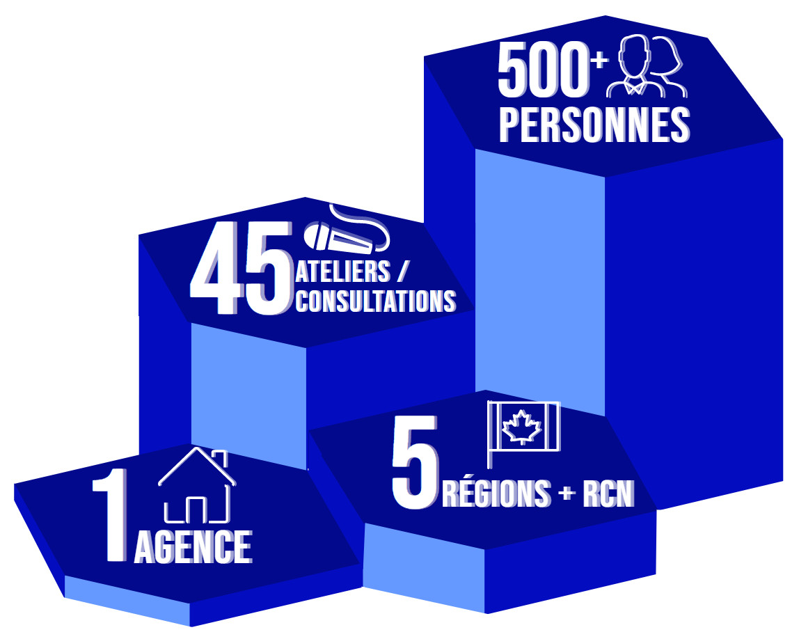
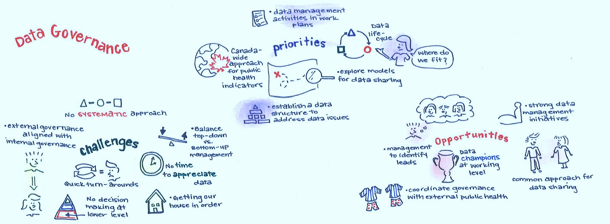
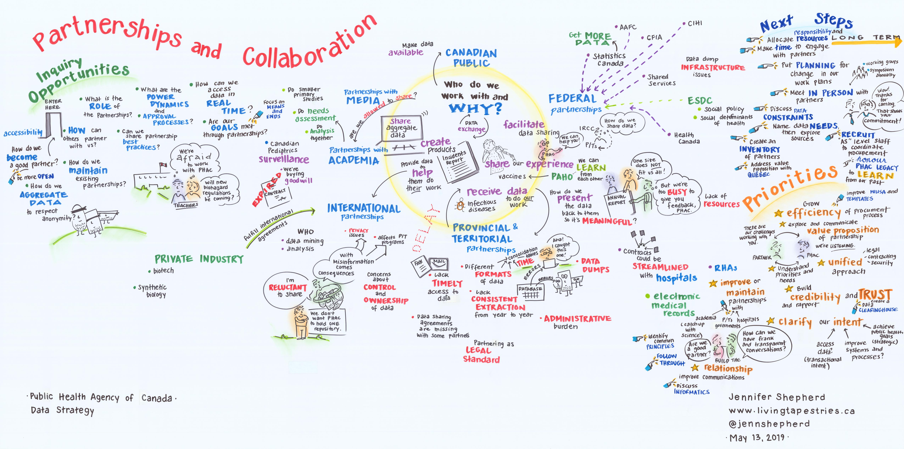

Introduction
L’Agence de la santé publique du Canada (ASPC) a pour mandat de promouvoir et de protéger la santé des Canadiens au moyen du leadership, de partenariats, d’innovation et d’interventions en santé publique.
Nous œuvrons sans relâche afin de prévenir et de contrôler les maladies chroniques et infectieuses ainsi que les blessures et nous nous tenons prêts à répondre aux urgences en matière de santé publique.
Nos interventions reposent, et reposeront toujours, sur des données fiables.
Notre capacité de recueillir, de produire, d’obtenir, de gérer, d’analyser des données et d’y accéder est essentielle à l’exécution de notre mandat, et nous reconnaissons que la valeur de nos données sera optimale lorsqu’il sera facile de les trouver et d’y accéder, et lorsqu’elles serviront à des fins multiples et seront impartiales et exactes.
Qu’il s’agisse d’avis de santé publique au sujet d’éclosions d’origine alimentaire ou d’avis de santé aux voyageurs, la population canadienne compte sur l’ASPC pour lui fournir des renseignements exacts et opportuns. Notre capacité de créer, de recueillir et d’échanger efficacement des données est indissociable de notre capacité de fournir aux Canadiens des renseignements essentiels sur la santé publique. Nous sommes cependant éminemment conscients qu’il est important de protéger la vie privée et de faire barrage aux préjugés lorsque nous recueillons, analysons et utilisons nos fonds de données.
Notre besoin en matière de données et la disponibilité de ces données continueront de croître de façon exponentielle dans les années à venir. La technologie avance à grands pas, créant des occasions sans précédent d’intégrer l’apprentissage machine et l’intelligence artificielle à l’analytique scientifique qui renforcera notre capacité de générer des modèles prédictifs d’une action d’envergure en santé publique. Aussi, les attentes sont de plus en plus grandesen matière de données en temps réel qui orientent les analyses afin de permettre une prise de décisions en temps opportun. L’ASPC allie de plus en plus des pratiques novatrices en analyse de données et en outils de visualisation sophistiqués à des méthodes de recherche et de surveillance traditionnelles en épidémiologie. Cela transforme notre environnement riche en données en de l’information cruciale en santé publique. Nous pouvons ainsi en apprendre davantage sur notre écosystème de santé publique et sur les politiques publiques afin de soutenir l’ensemble des Canadiens dans l’atteinte d’une santé optimale et de réduire les disparités en matière de santé dans les populations clés partout au pays.
Cette stratégie de données est conçue pour être à la fois ambitieuse et pratique. L’exécution de la stratégie permettra à l’ASPC de créer une assise pour les données sur la santé publique. Une fois terminé, le plan de mise en œuvre nous permettra de mettre en place des principes de gouvernance clairs, de concevoir une infrastructure de données horizontale, d’adopter des approches novatrices, d’encourager l’expérimentation itérative, de placer les utilisateurs au centre de nos activités et de former des partenariats avec des administrations et des organisations externes. Dans le cadre de cette initiative, nous reconnaissons que notre culture doit soutenir à la fois le perfectionnement de notre personnel et son besoin d’outils et de ressources afin qu’il puisse continuer d’être le tissu qui consolide notre organisation de santé publique.
Grâce aux mesures présentées dans cette Stratégie sur les données de l’ASPC, nous aspirons à être un organisme qui tire profit des innovations en matière de données et es capacités technologiques modernes afin de réaliser son mandat de promouvoir et de protéger la santé des Canadiens.
Contexte des données
Les données constituent la matière première de la surveillance, de la preuve, de la recherche et de la science. Elles jouent un rôle clé dans l’orientation des interventions et des décisions politiques en plus de soutenir les principales fonctions en santé publique. Les données contribuent à l’évaluation, à l’information sur le rendement et à la gestion axée sur les résultats des programmes et initiatives de l’ASPC. Elles concourent au transfert des connaissances, à l’éducation et à la production d’information en santé publique adaptée et diffusée aux Canadiens.
Dans leur forme la plus élémentaire, les données brutes sont des chiffres, des nombres et des relevés provenant d’une source. Les données jouent un rôle structurel important pour les organismes scientifiques, car elles fournissent les mesures et observations essentielles qui guident nos recherches, font avancer nos analyses et éclairent nos prises de décisions. L’innovation et la collaboration peuvent servir de catalyseurs durant ce processus de transformation. Les données deviennent des preuves et de l’information en santé publique qui, conséquemment, mènent à des décisions éclairées.
Pour nous acquitter de notre mission en tant qu’agence, nous utilisons des données pour produire une vue d’ensemble de la santé de la population dans l’ensemble du Canada. Les couplages de données sont nécessaires afin de maximiser la valeur de l’information et augmenter sa portée auprès des déterminants sociaux de la santé. Quand elles sont bien utilisées, les données permettent de dresser un portrait global de la situation de tous les aspects importants de la santé publique au pays, qu’il s’agisse de maladies d’origine alimentaire, des maladies chroniques, ou de programmes de surveillance de la santé. Il est également essentiel de bien utiliser les données pour faire en sorte qu’elles servent pour le bien public - pour le bien des personnes, des collectivités et de la société dans son ensemble.
Toutefois, vu la complexité du paysage canadien, le processus de transformation des données est loin d’être simple. À l’ASPC, les données peuvent être qualitatives et quantitatives, et elles sont recueillies au moyen d’enquêtes, de statistiques de l’état civil, du recensement, dans les laboratoires et les hôpitaux. Elles comprennent également des données internes comme des rapports ministériels, des évaluations de programme, des données financières, sur les ressources humaines, l’élaboration de méthodes, etc. Tout comme celui du Canada, le paysage des données de l’ASPC est diversifié et riche. Par ailleurs, les résultats en matière de santé publique ont des origines multifactorielles qui peuvent être difficiles à évaluer et à aborder de façon exhaustive sans adopter une approche interdisciplinaire concertée.
Beaucoup d’organismes comptent sur d’importantes sources de données qui contribuent à la prise de décisions concernant de nombreux déterminants sociaux de la santé. Néanmoins, si nous étions en mesure de déterminer, d’intégrer et d’interpréter plus facilement toutes les sources de données pertinentes (grâce à l’innovation et à la collaboration), nous pourrions influencer les changements qui permettront de réduire les disparités en matière de santé.
Aussi, le paysage dans lequel nous évoluons est caractérisé par une incertitude découlant des risques liés aux maladies infectieuses émergentes et réémergentes, y compris celles causées par la résistance aux antimicrobiens et les changements climatiques. Afin de nous préparer à ces difficultés et aux autres imprévus, il est nécessaire de mettre en place une structure qui nous permettra de délivrer la pleine puissance des données issues de multiples sources. Cela nécessitera de renforcer notre engagement envers l’innovation en matière d’analyse des données et de technologie (y compris l’intelligence artificielle et l’apprentissage automatique) en plus de favoriser des partenariats stratégiques permettant de solutionner les anciens, nouveaux et futurs problèmes en santé publique. Ce faisant, nous pourrons améliorer le travail de l’ASPC en matière de détection, d’éradication, de prévention et de contrôle des maladies pour, au bout du compte, assurer la santé des Canadiens.
L’ASPC produit, recueille et diffuse un large éventail de données en santé publique, notamment pour ses nombreux programmes de surveillance des maladies infectieuses et chroniques ou d’autres événements liés à la santé publique qui surviennent.
Malgré que des données et des analyses de grande qualité émergent des programmes de l’ASPC, notre approche globale en matière de gestion des données demeure fragmentée et inégale. Lorsqu’on considère les données du point de vue de l’Agence dans son ensemble, il est difficile d’établir clairement lesquelles sont détenues collectivement et lesquelles peuvent être consultées par les employés. De même, il est difficile de dégager les priorités de l’ASPC en matière de données pour éclairer la prise de décision et les interventions. Lorsque nous abordons nos partenaires (y compris les provinces et les territoires, Statistique Canada ou l’Institut canadien d’information sur la santé [ICIS]) concernant nos priorités en matière de données ou de surveillance, nous le faisons programme par programme et non en tant qu’organisme fédéral homogène.
De direction générale à direction générale, les données en santé publique sont recueillies par une pluralité de canaux, stockées sur divers médias, analysées au moyen de plusieurs méthodes et diffusées de diverses façons. Cela réduit la capacité de l’ASPC à remplir son mandat, surtout en raison de l’importance du travail interdisciplinaire dans le domaine de la santé publique. Par conséquent, notre réputation de source d’information fiable en santé publique est remise en question.
Lorsqu’on demande à nos employés les innovations en matière de données qu’ils aimeraient voir se réaliser, ils ne peuvent généralement voir plus loin que les obstacles quotidiens à franchir pour faire leur analyse de données habituelle et les difficultés actuelles sur le plan des TI, et encore moins dégager les possibilités d’innover. Pour de nombreuses parties de l’organisation, nous avons accepté de contourner les problèmes et d’adopter des solutions de fortune comme norme afin de surmonter nos difficultés en matière d’infrastructure de données et d’analytique. Lorsque des pratiques exemplaires novatrices sont suivies à l’ASPC, ou avec d’autres groupes et administrations, elles ne sont souvent pas échangées ou élargies à l’ensemble de l’Agence :
« Il y a un risque que, au fur et à mesure que le volume et le besoin de données sur la santé publique augmentent, tant à l’échelle nationale qu’à l’échelle internationale, l’ASPC ne puisse pas avoir accès à des données ou à des renseignements exacts, fiables et en temps opportun, ni la capacité d’entreprendre une analyse nécessaire des données, ce qui pourrait réduire l’efficacité du processus décisionnel fondé sur des données probantes en santé publique »
Ces défis limitent la capacité de l’ASPC à remplir son mandat. Par exemple, bien que nous amassions une quantité impressionnante de données, très peu de choses sont réalisées sur le plan de l’intégration des données entre les disciplines, comme les maladies infectieuses et les maladies chroniques, ainsi qu’entre les déterminants sociaux et économiques de la santé. Cela ne pourra se faire qu’en favorisant des partenariats efficaces et en tirant parti des nouvelles technologies afin de créer un plus grand nombre d’occasions d’innover en matière de données.
De plus, en raison de nos structures éparses en matière des données et en matière de responsabilisation à l’égard des données, nous avons manqué des occasions d’acquérir de meilleures connaissances en santé publique. Cette réalité a rendu le respect de notre engagement dans le cadre du Plan stratégique de l’ASPC difficile :
« Publier des données interactives en temps opportun et des analyses de grande qualité afin d’appuyer la prise de décision et les interventions. »
Au cœur des « Leçons de la crise du SRAS », aussi connues sous le nom de Rapport Naylor, se trouvent des recommandations liées au besoin de mettre en place une architecture de l’information, des modèles et des normes, des transferts technologiques, la protection des renseignements personnels et la gestion de l’information et l’élaboration des sources de données et de systèmes. Nous travaillons toujours à l’atteinte de ces objectifs.
« Les services de santé publique doivent encore chercher à réaliser le potentiel de surveillance efficace que permettent les nouvelles technologies. ... les progrès ont été trop lents et les systèmes en vase clos sont encore présents partout. » (Naylor, 2003)
L’ASPC compte donner aux Canadiens les moyens d’améliorer leur santé et veille pour cela à ce que de l’information exacte sur la santé publique soit diffusée en temps opportun. L’Agence doit évoluer et continuer de renforcer sa capacité de s’acquitter de cette responsabilité fondamentale pour faire en sorte que la réputation que nous avons d’être une source d’information digne de confiance sur la santé publique ne soit pas menacée - et que la réputation de chef de file en santé publique dont jouit l’ASPC demeure intacte.
Le changement de notre culture des données constitue une transformation organisationnelle qui nécessitera un leadership attentif, déterminé et stratégique ainsi que des investissements à long terme afin d’améliorer les capacités de gestion des données, l’infrastructure technique et les ressources analytiques de l’ASPC.
La présente Stratégie sur les données représente l’occasion d’ouvrir une nouvelle voie dans notre façon de traiter les données afin d’établir une approche claire et cohérente en matière de gestion des données qui contribuera à la prise de décisions et aux interventions. Il s’agit de la version 1.0 qui axe nos efforts sur l’établissement d’une base de données plus solide.
Stratégie sur les données

La Stratégie sur les données de l’ASPC est l’occasion pour nous d’examiner notre relation fondamentale avec les données de santé publique et la façon dont cette relation est influencée par l’évolution rapide de l’environnement technologique et les attentes en matière de données de plus en plus élevées au sein de la communauté de la santé publique, du gouvernement du Canada et de l’ensemble des secteurs de l’économie canadienne.
La Stratégie sur les données de l’ASPC constitue une approche en constante évolution quant à la façon dont nous orientons nos interventions et nos décisions. Il s’agit de la version 1.0 car celle-ci n’est pas statique et parce qu’elle se concentre sur nos efforts pour bâtir des fondations plus solides.
La portée de cette Stratégie sur les données est vaste et couvre les données quantitatives et qualitatives, les données des programmes, les données de surveillance, les mesures de rendement, les données administratives ainsi que les données d’entreprise, financières et relatives aux ressources humaines. Elle vise à créer un environnement de données au sein duquel toutes les données sont perçues comme une ressource partagée et une responsabilité commune.
La Stratégie sur les données s’articule autour de six thèmes clés : l’analyse fondée sur la science, les données en tant qu’actif, l’infrastructure de données, le partenariat et la collaboration, la gouvernance des données ainsi que les personnes et la culture. Chacun de ces thèmes est accompagné d’un plan en trois phases doté de mesures concrètes pour s’attaquer aux problèmes et saisir les occasions en matière de données à l’échelle de l’ASPC. La Stratégie de données sera réalisée au moyen d’un plan de mise en œuvre qui sera exécuté au moyen de 55 mesures sur cinq ans.
La première phase du plan de mise en œuvre comprendra des activités menées à partir du Centre de données, de partenariats et d’innovation. L’établissement d’un modèle de gouvernance des données au niveau de la direction s’inscrit également dans cette première phase du plan de mise en œuvre. Avec le concours du Centre de données, le modèle de gouvernance guidera les travaux de l’Agence aux deuxième et troisième phases, en déterminant l’orientation future des activités proposées dans le plan de mise en œuvre actuel.
Les deuxième et troisième phases du plan de mise en œuvre comportent un certain nombre de mesures qui exigent la participation et l’adhésion de l’ensemble de l’Agence.
Changer les fondements du fonctionnement de l’ASPC en matière de données constitue une transformation organisationnelle qui nécessitera un leadership attentif, déterminé et stratégique ainsi que des investissements à long terme afin d’améliorer les capacités de l’ASPC en gestion des données, son infrastructure technique et ses ressources analytiques, y compris ses ressources humaines. Le modèle de gouvernance devra déterminer la voie que l’Agence devra suivre et élaborer la charte de projet nécessaire pour permettre de mesurer et d’évaluer les progrès. L’intégration aux fonctions, aux programmes et laboratoires, ainsi qu’à la haute direction du Ministère est essentielle pour faire en sorte que l’Agence procède à la transformation numérique et aux données de façon intégrée. Notre plus grand avancement sera de reconnaître qu’un organisme reposant sur les données doit favoriser l’utilisation novatrice de la technologie. L’immobilisme n’est pas envisageable.
Les occasions qui se présentent à nous sont illimitées Au niveau de l’organisme, nous pouvons compléter nos méthodes traditionnelles de collecte de données en tirant parti de l’intelligence artificielle, des mégadonnées et des algorithmes d’apprentissage machine. Nous pouvons associer surveillance et données des médias sociaux afin de nous aider à prédire la façon dont les maladies se propageront, explorer l’utilisation de capteurs mobiles pour mieux comprendre la santé physique et la santé mentale, tirer parti de la surveillance des eaux usées pour soutenir un système permettant de signaler à l’avance les éclosions de maladies et les problèmes de toxicomanie ou mettre en œuvre le séquençage du génome entier combiné à la géocartographie afin de retracer l’origine d’une souche causant une maladie d’origine alimentaire.
C’est l’occasion pour nous de rechercher la relation la plus efficace, la plus efficiente et la plus moderne entre les données, l’information et le processus décisionnel afin d’obtenir les résultats souhaités pour les Canadiens, et de concourir à l’établissement d’une base plus solide pour les données fédérales sur la santé publique.
Tout au long du cycle de vie des données, des politiques, cadres, orientations, normes et pratiques guident la gestion et l’utilisation des données en tant qu’actif - certains existent, d’autres doivent être mis à jour et d’autres doivent être rédigés. Quelle que soit leur forme, la Stratégie sur les données de l’ASPC chapeaute tous ces éléments et fournit les grandes lignes d’une vision globale pour l’ASPC. La Stratégie sur les données établit la direction à suivre dans le futur, concentre les efforts et fournit un plan cohérent pour administrer, analyser et déployer les données pertinentes afin d’atteindre les résultats escomptés en santé publique et de soutenir une culture commune en matière de données.
Ces mesures prises pour atteindre une culture commune en matière de données seront soutenues par les principes suivants :
1. Nous sommes une seule et même agence : Nous abordons nos partenaires d’une seule voix et par des canaux bien définis pour établir des accords et communiquer des données. Nos structures internes et nos besoins sont notre responsabilité et n’ont pas à être pas être gérés ni compris par les autres.
2. Nous gérons les données de santé publique en tant qu’actif : Nous traitons les données comme un outil essentiel. Nos données peuvent être mises à profit, réutilisées, mises en commun et modelées pour être interopérables. Nous le faisons avec soin et de manière experte, cela afin de respecter la vie privée tout en améliorant les interventions en santé publique. Nous tirons parti de normes et pratiques exemplaires partagées et travaillons en collaboration avec nos partenaires provinciaux et territoriaux, la communauté de la santé publique et le grand public.
3. Notre infrastructure technique nous donne les moyens d’agir : Notre infrastructure technique nous donne les moyens d’agir car elle facilite la collecte, l’analyse et la diffusion des données. Sauf quelques exceptions, nos limites techniques n’ont aucune influence sur le type de données que nous recueillons, préservons et utilisons ni sur la façon dont nous effectuons nos analyses et diffusons l’information pour orienter les décisions et interventions en santé publique.
Plan de mise en œuvre
Consultations

Afin d’élaborer sa Stratégie sur les données, l’ASPC a adopté une approche à la fois « descendante » et « ascendante ». Bien que le Comité exécutif (CE) de l’Agence ait approuvé la portée générale de la stratégie dans le cadre de ses « six thèmes » et de son approche de consultation, le contenu de la stratégie et le plan de mise en œuvre ont été préparés à la suite de la consultation directe de 500 membres du personnel de l’ensemble des directions générales, régions, groupes et niveaux.
Le personnel a été consulté de l’une de ces deux façons :
- Par une série d’ateliers ouverts axés sur les six thèmes de la Stratégie sur les données. La participation s’est faite en personne et à distance (par téléphone ou par vidéo) pour ainsi inclure toutes les régions géographiques de l’Agence. Durant les ateliers, le personnel a fait part de ses expériences concernant la façon actuelle d’utiliser les données au sein de l’ASPC, a expliqué les défis auxquels il devait faire face dans la cueillette et l’utilisation des données et a proposé des solutions à envisager pour combler les lacunes.
- Par plus de vingt séances de consultation ciblées avec des comités et groupes clés, notamment la Division de la gestion de la protection des renseignements personnels, le Bureau de l’audit et de l’évaluation, l’équipe d’intégration de la surveillance, le personnel du Laboratoire national de microbiologie et les comités de gouvernance de second niveau (politiques et opérations). Par ailleurs, le Centre des données de l’ASPC a entretenu un dialogue avec chaque comité exécutif de direction générale de l’ASPC afin d’établir leurs besoins et leurs attentes relativement à la Stratégie sur les données.
Cette vaste approche de consultation a permis de s’assurer que les domaines de spécialité propres aux données ont orienté la portée de la stratégie et englobait les programmes de l’ASPC, les sciences de laboratoire ainsi que l’évaluation et la gestion fondée sur les résultats. Au terme de la période de consultation de six mois, plus de 25 % des employés de l’ASPC avaient assisté et contribué à au moins une séance de consultation.
Le Centre des données de l’ASPC s’est également engagé à travailler en toute transparence durant ce processus. Les résumés et les notes étaient soumis à une validation, puis publiés pour que d’autres puissent les lire. Pour obtenir la liste complète des séances de consultation et consulter les notes de ces séances menées par le Centre des données, veuillez consulter la page de la Stratégie sur les données de l’ASPC sur GCCollab, Histoire véridique : une Stratégie sur les données pour la santé publique.
Qui a été consulté
- Ensemble du personnel dans le cadre d’ateliers et de consultations en ligne (y compris Colonnade, Carling et les cinq régions)
- Bureau du conseiller scientifique principal
- Laboratoire national de microbiologie
- Centre de la surveillance et de la recherche appliquée
- Bureau de l’administratrice en chef de la santé publique
- Division de la gestion de la protection des renseignements personnels
- Comité exécutif de la Direction générale de la prévention et du contrôle des maladies infectieuses (DGPCMI)
- Comité exécutif de la Direction générale de l’infrastructure de sûreté sanitaire (DGISS)
- Comité exécutif de la Direction générale de la promotion de la santé et de la prévention des maladies chroniques (DGPSPMC)
- Bureau de l’audit et de l’évaluation
- Politique et planification stratégiques
- G5 de l’ASPC
- Dirigeant principal des finances
- Direction des services de gestion de l’information
- Direction des services en ressources humaines
- Équipe d’intégration de la surveillance
- Champion de l’analyse comparative fondée sur le sexe et le genre + (ACSG+) et Centre de prévention des maladies chroniques et de l’équité en santé
- Comité d’orientation
- Comité des opérations
- Direction générale des communications et des affaires publiques
- Direction générale des services de gestion
- Bureau des affaires internationales
Introduction
De mars à août 2019, le Centre des données, des partenariats et de l’innovation de l’ASPC a consulté plus de 500 employés de l’ASPC. Les consultations ont jeté les fondations de l’élaboration de la Stratégie de données et du plan de mise en œuvre. Nous avons entendu que la culture en matière de données de l’ASPC était décrite comme un chapelet « d’îles indépendantes » ayant de multiples occasions de partager leurs ressources, pratiques exemplaires et normes en matière de données. La solution la plus fréquemment proposée est la collaboration horizontale, l’intégration et le leadership dans les initiatives concernant les données. Le désir d’être sur la même longueur d’onde afin de simplifier et de rationaliser les processus adaptés qui sont actuellement intégrés à tous les éléments du cycle de vie des données était général. Pour obtenir de plus amples renseignements sur les commentaires du personnel, visitez la page Stratégie de données de l’ASPC sur GCCollab : Histoire véridique : une Stratégie sur les données pour la santé publique.
Gouvernance des données (1/6)
« Le succès est atteint quand les employés comprennent où ils se situent dans l’ensemble, peu importe leur place dans le cycle de vie des données. L’ASPC doit nommer des responsables à l’échelle de l’organisme ainsi que des champions en matière de données au niveau opérationnel. »
« Chaque jour, nous sommes aux prises avec des lacunes en matière de données dans notre organisme qui ont une influence dans l’ensemble des directions générales. Or, nous ne pouvons signaler ces problèmes à personne. Nous avons besoin d’une entité pour agir sur le plan des données au nom de l’Agence. »
Les consultations réalisées par le Centre des données ont permis de constater de nombreux besoins à l’échelle de l’Agence mais, globalement, le besoin de collaboration horizontale, d’intégration et de leadership est celui qui a été le plus fréquemment mentionné.
Ce besoin était souvent exprimé en utilisant le mot « commun ». Le Centre des données a entendu les appels à adopter un langage, des définitions, des principes et des outils en commun, « une compréhension commune de la gestion des données » et une « approche commune en matière d’ententes de partage des données ».
Pour bien des gens, le rôle d’un dirigeant principal des données et une structure de gouvernance claire passaient pour être une façon convenable de déléguer les responsabilités et de se faire le champion des ressources et du soutien.
Sur le plan thématique, les commentaires obtenus lors des consultations se concentrent sur l’idée que des processus accessibles et cohérents permettraient aux employés de trouver des solutions à leurs besoins en matière de données et de développer de nouveaux domaines de recherche. Selon plusieurs, une gouvernance des données efficace permettrait aux employés de trouver leur voie et se traduirait par une compréhension commune de la façon d’acquérir et de gérer les données dans l’ensemble de l’ASPC.
Les données en tant qu’actif (2/6)
« Les données sont généralement bien utilisées pour atteindre un objectif initial, mais elles sont rarement réutilisées. »
« La gestion et le nettoyage des données prennent du temps. Cela fait partie de notre charge de travail, ce n’est pas quelque chose que l’on fait en vitesse sur le coin du bureau. »
Les données de l’ASPC ont été décrites comme étant cloisonnées et propres au projet pendant les consultations. En tant qu’organisme, l’ASPC était décrite comme un chapelet « d’îles indépendantes » partageant peu leurs ressources, pratiques exemplaires et normes en matière de données.
D’une direction générale à l’autre, les données sont recueillies de manière différente, à des fins différentes et en vertu d’accords différents. Les données sont généralement utilisées pour atteindre un objectif initial, puis sont rarement réutilisées.
Comme l’a souligné un participant aux consultations, cela peut causer des inégalités car « sans portrait d’ensemble de nos données, il est impossible de déterminer les lacunes, si bien que certains secteurs ne reçoivent pas l’attention qu’ils méritent ». À l’avenir, l’ASPC doit délaisser de plus en plus les rapports statiques, principalement textuels, en faveur de la prestation en temps réel de communications ouvertes et visuelles au public. Si nous désirons utiliser nos données pour améliorer la santé globale des Canadiens, la collaboration horizontale est essentielle.
Tout au long des consultations, nous avons aussi entendu les appels à établir des normes, des processus et des pratiques exemplaires en matière de collecte, de stockage, d’accès, d’utilisation et de diffusion des données. Pour la plupart des participants, traiter les données en tant qu’actif signifie considérer les fonds de données détenues par l’ASPC comme une ressource pouvant servir à améliorer le rendement et la qualité des initiatives de santé publique dans l’ensemble de l’Agence.

Analyse fondée sur la science (3/6)
« L’augmentation de l’analyse fondée sur la science nous permettrait de nous consacrer plus à l’analyse prédictive. Nous ne sommes pas suffisamment agiles pour nous retourner rapidement afin d’identifier les problèmes émergents et d’y réagir. »
« On ne peut pas s’attendre à ce que chaque équipe possède des capacités en matière d’analyse avancée. Il n’est pas nécessaire que chaque équipe possède son propre expert en IA. Nous devrions plutôt compter sur une ressource ou une communauté de pratique centralisée qui viendrait en aide au personnel des programmes au besoin. »
Durant les consultations, nous avons voulu nous renseigner sur le potentiel d’adopter des pratiques avancées et novatrices en matière d’analyse des données en santé publique. Les données peuvent permettre de faire de saisissantes prédictions, de la détection précoce de l’éclosion des maladies infectieuses à la prédiction des risques individuels en passant par les maladies chroniques. Nous avons donc questionné le personnel de l’ASPC concernant le potentiel à cet égard.
Or, ce que nous avons constaté avec les réponses obtenues est que notre capacité à recueillir, gérer et utiliser les données ne nous permet pas de facilement soutenir les façons nouvelles ou novatrices d’utiliser les données. Bien des employés nous ont dit qu’avant d’investir dans de nouvelles technologies, nous devrions nous assurer d’être suffisamment efficaces dans les activités fondamentales. « L’innovation, c’est très bien », nous a mentionné un répondant, « mais je voudrais que la base fonctionne. »
Nous devons également changer notre façon de travailler en nous concentrant moins sur l’utilisation des données restreintes dans le but de produire des rapports statiques (principalement textuels) pour plutôt proposer au public des communications en temps réel, ouvertes et visuelles représentant ce que nous faisons.
« Nous profitions auparavant d’une plus grande souplesse dans le traitement des données mais, aujourd’hui, il existe plusieurs niveaux de sécurité, l’accès est limité et il y a trop de règles, de formulaires et de réunions. Le processus est encombrant. Dans l’environnement réel, nous devrions être capables de simplement agir. »

Infrastructure de données (4/6)
« L’infrastructure de stockage et de réseau actuelle de l’ASPC ne répond pas aux exigences pour l’analyse de données moderne et de qualité. On ne peut pas entreprendre d’analyse avancée de données si nous n’avons aucun endroit où les enregistrer. »
« Cela prend beaucoup trop de temps pour obtenir de nouveaux logiciels pour l’analyse de données. Le processus d’approvisionnement prend généralement plus de temps que le projet lui-même. »
Au cours des consultations, le Centre de données a entendu des appels unanimes en faveur d’une meilleure infrastructure de données. Comme l’un des répondants l’a dit : « Nous n’avons même pas le strict minimum dont nous avons besoin pour faire notre travail. »
Les participants ont le sentiment que la technologie est souvent un frein : elle ajoute des niveaux de difficulté et de la redondance en plus de limiter l’espace et l’accès. De nombreux employés ont l’impression de passer la majorité de leur temps à éteindre des feux, à attendre qu’un logiciel réponde ou à chercher des solutions de rechange à des problèmes qui devaient être réglés par la technologie.
Le personnel a aussi mentionné l’énorme influence que l’accès à l’infrastructure des données et le contrôle de celle-ci peut avoir sur la recherche en santé publique. Les chercheurs ont mentionné le potentiel de l’infonuagique pour réduire les coûts liés à l’utilisation des applications génomiques. Dans le contexte de notre infrastructure actuelle, le problème est que l’infonuagique et les outils qui y sont liés, comme les machines virtuelles, la géocartographie, l’analyse des réseaux sociaux et la modélisation, n’ont pas été adoptés à l’échelle de l’Agence. En d’autres termes, il est difficile de s’adonner à la recherche de pointe et à la science expérimentale en santé publique lorsqu’on n’a pas le contrôle de son propre équipement.

Partenariats et collaboration (5/6)
« Établir de nouveaux partenariats est un processus difficile. Nous manquons de normalisation sur le plan des règles et il n’y a pas de modèles ou de pratiques exemplaires faciles à trouver. Être expert dans un domaine ne fait pas de vous un expert de la négociation de contrats. »
« Des partenariats existent dans divers secteurs de l’organisme. Nous devons sensibiliser le personnel à l’existence des partenariats déjà en place. »
Les partenariats sont essentiels à l’exécution du mandat de l’ASPC, qui est la principale passerelle qui relie les provinces, les territoires, les universités, les organismes sans but lucratif, le secteur privé et la communauté internationale de la santé publique. C’est pourquoi les défis auxquels nous faisons face ont une influence directe sur notre rendement.
L’un des principaux défis dont nous avons entendu parler concerne les problèmes de confiance. En bref, nos partenaires ne nous communiqueront pas leurs données si nous ne faisons pas preuve de leadership ou si nous ne démontrons pas une « approche globale » unique en matière de collecte, de gestion et d’utilisation des données. Lorsque nous recevons des données, elles manquent généralement de normalisation.
La valeur de nos partenariats peut se réaliser à travers des processus cohérents et dynamiques que nos partenaires peuvent respecter. Nos relations avec les provinces et territoires ont le potentiel de mener à de précieux partages des données. Toutefois, les tentatives du passé ne se sont pas déroulées comme nous l’espérions. Au bout du compte, l’ASPC devra offrir une forte proposition de valeur pour établir les fondements de partenariats efficaces avec nos homologues des provinces et territoires afin que tous se sentent investis.
Comme un participant l’a clairement résumé : « [Nous devons] déterminer et formuler ce que nous allons apporter au partenariat, exprimer clairement ce que nous sommes en mesure de fournir dans une relation bidirectionnelle et articuler la proposition de valeur de l’ASPC faite à ses partenaires ».
Personnes et culture (6/6)
« Il est difficile d’utiliser les données et d’adopter de nouveaux outils si nous fuyons le risque et travaillons en vase clos. »
« Nous devons développer un écosystème au sein duquel la science, les politiques et les programmes fonctionnent en harmonie avec les données. Il nous manque un espace de rencontre où nous pourrions apprendre les uns des autres. »
Les personnes et la culture sont des éléments déterminants de tout organisme performant, surtout dans une agence aussi spécialisée que l’ASPC qui rassemble des scientifiques, des chercheurs, des professionnels de la santé publique, des analystes de politiques et d’autres employés dont le rôle est décisif. La technologie, les outils et les données ne sont pas plus importants que les personnes qui les utilisent ou qu’une culture qui soutient une prise de risques efficace.
Au cours des consultations, quelques secteurs de l’ASPC ont signalé un niveau élevé de littératie en matière de données. Cependant, de nombreux autres groupes ont parlé de la nécessité d’accroître la littératie en matière de données dans l’ensemble de l’Agence, afin que nous puissions collectivement maximiser le trésor d’information qui est disponible grâce à la surveillance, aux sources administratives et à d’autres sources de données. Le personnel nous a donné plusieurs exemples de situations dans lesquelles le fait d’allier les compétences en matière de données à la technologie rapporterait d’importants bénéfices à l’ASPC alors que nous nous dirigeons vers un environnement nettement plus axé sur les données.
Aussi, s’assurer que le personnel de l’ASPC puisse parler une « langue commune » en matière de données permettrait à l’Agence de compter sur des équipes multidisciplinaires et de tirer parti d’outils collaboratifs afin de maximiser son influence sur les activités et programmes en santé publique, la promotion de la santé et les interventions en santé publique. Les employés estiment qu’il est nécessaire de veiller à ce que les personnels des sciences, des politiques, de la gestion des données et des opérations des programmes puissent collaborer en bonne entente pour réduire le cloisonnement. Nous avons également reçu des commentaires portant sur le besoin de s’assurer que le personnel scientifique et politique ainsi que celui affecté à la gestion des données et à l’exploitation des programmes collabore pour éliminer le travail en vase clos.
À mesure que notre environnement de travail évolue, notre culture en tant qu’Agence et notre base de connaissances doivent continuer à évoluer de manière dynamique pour rester en phase avec le changement. Pour ce faire, il faut mettre de la formation et des outils à la disposition de nos employés qualifiés et compétents actuels, afin de pouvoir demeurer à la fine pointe de la technologie, recruter et maintenir à l’effectif des employés qualifiés, et créer un environnement d’apprentissage durable. La formation, les outils et le personnel qualifié ne seront efficaces que si l’on donne aux employés la latitude nécessaire pour mettre en application leurs compétences acquises et leurs connaissances en milieu de travail, c’est-à-dire en leur permettant.

La Stratégie sur les données en action
Projet pilote d’infonuagique haute performance – Laboratoire national de microbiologie
L’infonuagique prend de plus en plus d’ampleur dans l’univers de la haute technologie d’aujourd’hui. Elle offre des solutions aux contraintes de stockage de base ainsi que des applications plus gourmandes en puissance de traitement comme l’intelligence artificielle et l’apprentissage machine. Pour mettre à l’essai le nouvel environnement infonuagique, le Laboratoire national de microbiologie (LNM) a formé une petite équipe d’informaticiens, de biologistes et d’ingénieurs de la recherche chargée de répondre à trois questions simples : L’infonuagique peut-elle servir à l’extension du centre de données de calcul à haute performance (CHP) du LNM? Le CHP infonuagique peut-il être rentable? Le LNM peut-il tirer parti du CHP infonuagique?
Le LNM connaît des pointes importantes d’activité informatique qui utilisent au maximum l’infrastructure de CHP en place. Certains chercheurs et scientifiques doivent donc attendre pour obtenir du temps de serveur lorsque la demande pour les ressources de CHP est élevée. Jusqu’à présent, cette situation a été réglée par l’ajout d’ordinateurs et d’infrastructures physiques supplémentaires. Cependant, des centres de données ont commencé récemment à offrir un service de calcul haute performance (aussi appelé infonuagique) à des tarifs qui peuvent être rentables et, dans certains scénarios, sont moins élevés que les coûts liés à l’achat de nouveaux ordinateurs. Pour mettre à l’essai l’environnement infonuagique, l’équipe est passée du CHP sur place à Amazon Web Services (AWS).
Les choses ne se sont pas mises en place immédiatement. Sans optimisation des données, les essais de calcul à plus grande échelle ont donné des résultats pires avec AWS qu’avec des ressources informatiques locales. En examinant de façon approfondie les données sur l’utilisation des ordinateurs, l’équipe s’est rendu compte que le simple passage de l’architecture sur place à l’environnement d’AWS ne serait pas suffisamment efficient pour permettre d’atteindre les objectifs de performance. Grâce à une compréhension approfondie de la réseautique, l’équipe a été en mesure de choisir l’environnement de stockage et les stratégies de mise à l'échelle des ressources informatiques appropriés pour rendre le projet pilote AWS plus rentable par rapport à l’infrastructure de CHP sur place.
Le projet pilote a éventuellement permis de trouver des réponses positives aux trois questions. L’infonuagique peut servir à étendre le CHP au LNM. Le CHP infonuagique peut être rentable. Le LNM peut utiliser l’infonuagique pour exécuter des travaux véritablement scientifiques. De façon plus générale, le projet pilote a permis de constater qu’un environnement infonuagique d’AWS ne convenait pas aux essais informatiques à plus grande échelle. Heureusement, grâce à son expertise, l’équipe du projet pilote a pu trouver rapidement des gains d’efficacité pour améliorer la qualité de l’infonuagique de manière qu’elle soit supérieure à celle de l’infrastructure informatique traditionnelle.
Infobase de la santé publique
L’Infobase de la santé publique permet aux chercheurs, aux professionnels de la santé et à d’autres parties intéressées à la santé publique d’avoir accès à des données à jour et à l’histoire que recèlent les chiffres, et leur procure la capacité d’interagir avec des visualisations de données novatrices et accessibles.
L’Infobase a changé la façon traditionnelle dont la plupart des organismes de santé diffusent les données, depuis des publications sur papier contenant des tableaux volumineux et complexes à l’interprétation et à la manipulation en ligne des données sous forme de graphiques, de cartes et de tableaux simples, faciles à comprendre.
Bien qu’une partie de ce qui fait le succès de l’Infobase de la santé publique soit une culture axée sur la réussite d’apprentissage continu, de mesure du rendement novatrice et de conception itérative (ce qui comprend de tirer l’enseignements des échecs!), le moteur le plus important est le travail acharné et le soutien des équipes de données de toute la Direction générale de la promotion de la santé et de la prévention des maladies chroniques (DGPSPMC) et d’une liste sans cesse croissante d’équipes dans l’ensemble du portefeuille de la Santé.
Réseau mondial d’information en santé publique (RMISP)
Le Réseau mondial d’information en santé publique (RMISP) combine une plateforme Web qui analyse l’information de source ouverte dans le monde entier avec une équipe d’analystes hautement instruits, dévoués, multiculturels et multilingues qui filtrent et évaluent l’information.
Le RMISP aide le Canada et d’autres pays à effectuer une surveillance fondée sur les événements pour la détection précoce, l’évaluation et la déclaration des éclosions de maladies infectieuses et d’autres menaces émergentes pour la santé publique. Chaque jour, le RMISP traite en moyenne 3 000 bulletins de nouvelles en neuf langues, et les analystes sont toujours à l’affût de la prochaine menace éventuelle pour la santé publique.
Le RMISP a été reconnu comme un pionnier en matière de mégadonnées dans le domaine de la santé publique. L’apprentissage machine avancé dans le traitement du langage naturel a été mis en œuvre pour améliorer la notation de la pertinence, la catégorisation, l’étiquetage géographique et l’élimination du chargement en double d’articles dans la plateforme du RMISP.
Ces innovations en matière de techniques d’intelligence artificielle aident considérablement l’équipe d’analystes à être plus efficace en réduisant la charge de travail afférente à la subsistance du système, ce qui laisse aux analystes plus de temps pour effectuer l’analyse et la production de rapports.
Le Comité exécutif a également demandé au Centre de données de relever le défi qui a été lancé dans le rapport du gouvernement du Canada au greffier du Conseil privé : Feuille de route de la Stratégie de données pour la fonction publique fédérale, et de créer une stratégie de données pour l’ASPC.
En plus des « récits de réussite de l’ASPC » présentées à la section précédente, la mise en œuvre de la Stratégie sur les données sera soutenue par de nouveaux projets pilotes relatifs à la science de données qui illustreront la vision de la stratégie en action. Des collègues de tous les secteurs de l’ASPC ont approché le Centre des données pour obtenir de l’aide sur le plan de visualisation des données afin de les rendre plus accessibles et pertinentes pour divers publics. Les visualisations de données interactives permettent une meilleure compréhension des tendances en santé publique et fournissent ainsi une meilleure base sur laquelle prendre des décisions en matière de santé publique.
Au-delà de la visualisation, les projets pilotes permettront d’augmenter la valeur de nos données en créant des plateformes interactives, en automatisant les processus et en facilitant la production de rapports personnalisables afin de permettre au personnel de tirer le maximum des données de l’ASPC.
De plus amples renseignements sur les nouveaux projets pilotes relatifs à la science de données suivront.